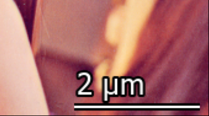

Adds a scale bar to the lower right corner of the image.
add_scale_bar(image)| image | AdornedImage | Image to which a scale bar is to be added. |
| AdornedImage | Image with the scale bar added. |
All combinations of encoding and bit depth valid for AdornedImage are supported.
The input image has minimum size of 256x256 pixels. The image must also contain valid pixel size metadata:
image.metadata.binary_result.pixel_size. Unit and prefix power are not required.
If empty, a meter to the power of one is assumed.
The scale bar is calculated for the horizontal axis (this is relevant if the pixel size is not a square).
The scale bar function returns a copy of the image, the original object is not changed. Note that when adding a scale bar to an image with low contrast, the result may appear darker due to the histogram shift. The contrast issue can be solved by stretching the histogram of the image before adding the scale bar.
The following figure shows a visual example of the scale bar in an RGB image:

The following example shows how to add a scale bar to an image and save it to disk as a png file:
# Acquire a full frame image
image = microscope.acquisition.acquire_camera_image(CameraType.BM_CETA, ImageSize.PRESET_4096, 1)
# Add a scale bar to the image
image_with_scale_bar = vision_toolkit.add_scale_bar(image)
# Save the image to disk
image_with_scale_bar.save(r"C:\ceta_image.png")
The next example shows how to add a scale bar to a low contrast image with histogram stretching:
# Stretch the histogram of the image - with outlier filtering
stretched_image = vision_toolkit.stretch_histogram(low_contrast_image)
# Add a scale bar to the image
image_with_scale_bar = vision_toolkit.add_scale_bar(stretched_image)
# Save the image to disk
image_with_scale_bar.save(r"C:\low_contrast_image.png")